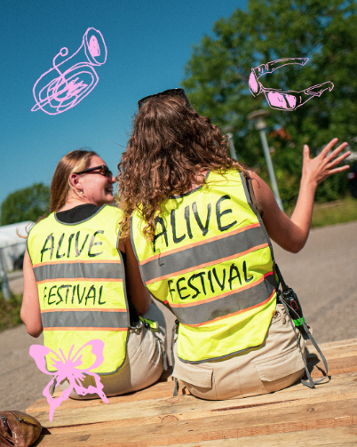

Alive Festival skabes af engagerede frivillige, og alle er velkomne. Har du lyst til at blive frivillig eller har spørgsmål, så skriv til frivillig@alivefestival.dk. Vi har tre forskellige typer frivillige med hvert sit engagementniveau - jo mere du bidrager, jo mere får du igen.
For dig, der vil hjælpe omkring festivalen.
24 t. før /10 t. under/16 t. efter
Partoutbillet, forplejning på vagt, frivilliglounge + tekstiltryk i årets Alive-design.
For dig, der vil give en ekstra indsats.
40 t. før /20 t. under/32 t. efter
Partoutbillet, 5 ølbilletter, forplejning på vagt, frivilliglounge + tekstiltryk i årets Alive-design.
Du kan arbejde med fx bar, opbygning, service, backstage og stagehand.
For dig, der vil være med hele året og udvikle Alive Festival bag kulisserne. Her arbejder vi med alt fra musik, kunst og boder til frivillighed, sikkerhed og planlægning.
Lige nu søger vi 365'ere til:
Alle frivillige skal være fyldt 15 år pr. 17. juli 2026. Ønsker du at være frivillig i baren, skal du dog være fyldt 18 år inden d. 23. juli 2026, og ønsker du at være Tryghedsvært, anbefaler vi, at du er over 25 år, og minimum 21 år.
Bliver du syg før din vagt, skal du straks kontakte frivilligkoordinatorerne på frivillig@alivefestival.dk. Bliver du syg under selve festivalen, og har hentet dit armbånd, skal du give besked direkte til frivilligteamet på frivilligtelefonen (nummeret vil fremgå i vores frivillighåndbog). Du vil selvfølgelig ikke blive straffet for uforudsigelige omstændigheder, men i særlige tilfælde kan festivalen gøre krav på at se dokumentation. Udgifter ifm. dokumentation betales af den frivillige. Udebliver du fra din vagt uden sygemelding, bliver du opkrævet et beløb svarende til partoutbillettens pris i døren samt et gebyr på 350 kroner.
Har du tilmeldt dig som frivillig, kan du godt melde afbud inden festivalen. Tilmeldingen er dog bindende fra den 25. juni 2026. Hvis du melder fra efter denne dato, opkræves der et gebyr på 350 kroner.
I perioden 24. februar – 25. juni er det muligt at blive frameldt uden gebyr. Du framelder dig ved at sende en mail til frivillig@alivefestival.dk. Herefter er du frameldt, når du har modtaget en afbudsbekræftelse fra en frivilligkoordinator på mailen.
Udebliver du fra din vagt uden ovennævnte sygemelding, bliver du opkrævet et beløb svarende til partoutbillettens pris i døren samt en afgift på 350 kroner.
For at få adgang til festivalpladsen skal du have et frivilligarmbånd. Hvis du ved tilmelding har valgt camping, får du automatisk et campingarmbånd – camping er gratis for alle frivillige, og du skal selv medbringe telt eller købe tilkøb via billetsiden.
Skal du arbejde før festivalen, er der også mulighed for overnatning; information gives via frivilligportalen.
Du får både frivilligarmbånd og campingarmbånd i billetvognen ved indgangen mod fremvisning af gyldigt billed-ID. Har du en vagt før åbning, hjælper din teamleder dig med at få armbåndet.
HEAP er vores frivilligportal, hvor du tilmelder dig som frivillig, og vælger dit hold samt vagt. Det er vigtigt, at du holder dig opdateret i systemet, så du ikke misser nyheder og informationer omkring dit frivillighold og din vagtplan.
Du skal selv vælge dit hold og din vagt når du tilmelder sig dom frivillig. Vi kører efter først til mølle princippet, så jo før I tilmelder jer jo bedre chance er der for at I kan arbejde sammen.
Du vælger selv, hvilket hold og hvilken vagt du ønsker at være frivillig på. Hvis du ikke har valgt en vagt før d. 25. juni 2026, vil du blive afmeldt din frivilligplads.
Tilmelder du dig som frivillig efter d. 25. juni vil din tilmelding være bindende med det samme.
Når du er tilmeldt som frivillig, kan du på vores frivilligportal under siden ‘FAQ’ finde svar på alle spørgsmål om vagter, ventetider og vagtplaner.
Tilmeldingen til Alive Festival åbner er åben, og du kan tilmelde dig her: https://frivillig.alivefestival.dk
Vi glæder os til at vi i fællesskab kan lave sommerens festival i 2026!
Se frivillighåndbog